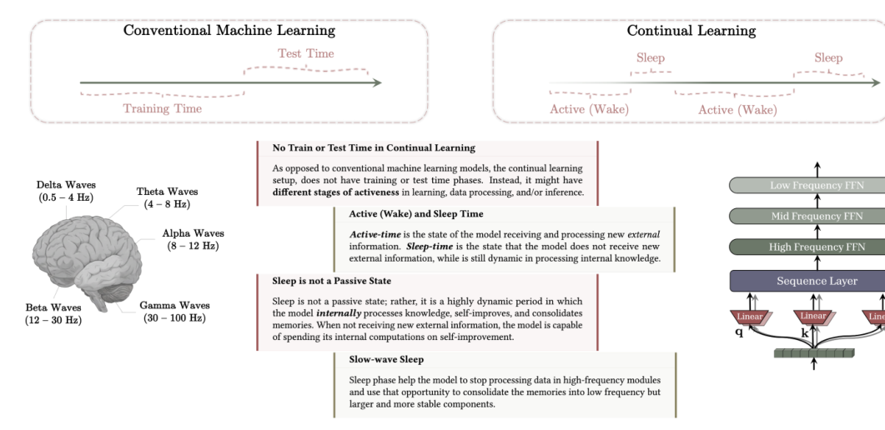
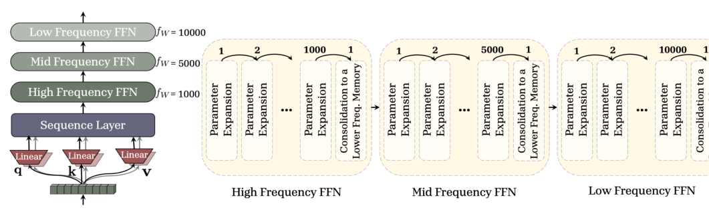
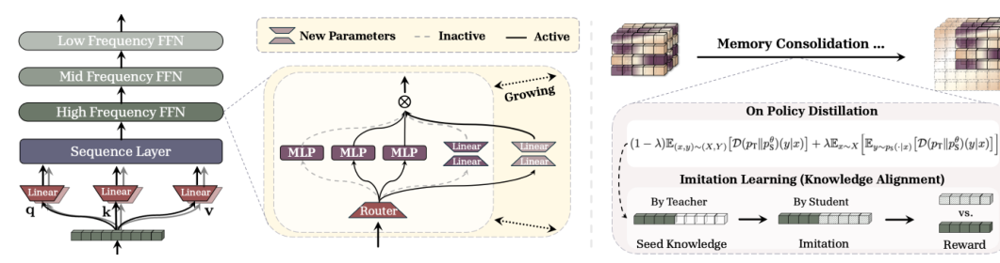
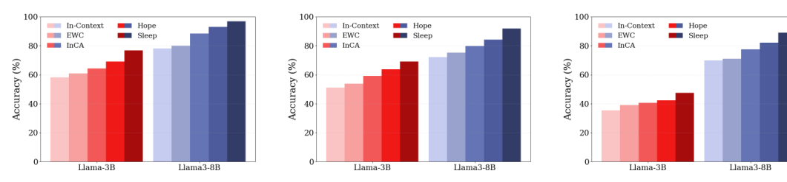

Background & Motivation
本文主張:LLM 也需要睡覺。作者把人腦「睡眠鞏固記憶」的機制搬進 LLM,提出 Sleep 範式:模型的生命週期不再分「訓練 / 測試」,而是交替清醒(Wake)吸收新知,與睡眠(Sleep)整理內部知識。睡眠含兩階段——記憶鞏固(Knowledge Seeding 向上蒸餾)把短期記憶固化進新長出的長期參數,以及 Dreaming(自產合成資料自我改進),藉此對抗災難性遺忘、強化長脈絡與持續學習。
The thesis: LLMs also need sleep. The authors port the brain's sleep-based memory consolidation into LLMs as a Sleep paradigm: a model's lifecycle is no longer split into train / test, but alternates a Wake phase (absorbing new data) with a Sleep phase (reorganizing internal knowledge). Sleep has two stages—Memory Consolidation (Knowledge Seeding, an upward distillation) that fixes short-term memories into newly grown long-term parameters, and Dreaming (self-generated synthetic data for self-improvement)—together fighting catastrophic forgetting and boosting long-context and continual learning.

如果只有 30 秒In 30 seconds
- 問題 — LLM 部署後基本是靜態的:知識停在「knowledge cutoff」。要更新則兩難——重訓太貴,微調 / LoRA 迭代又造成災難性遺忘(CF);ICL 雖能持續適應,但知識出了 context 就消失。
- Problem — After deployment LLMs are largely static: knowledge frozen at a cutoff. Updating is a dilemma—re-training is costly, while fine-tuning / LoRA iterations cause catastrophic forgetting (CF); ICL adapts continually but its knowledge vanishes once out of context.
- 類比 — 像人類的順向失憶症:能用當下 context,也保有久遠的預訓練知識,卻無法把「短期」轉成「長期」。人腦靠睡眠解決;那 LLM 呢?
- Analogy — Like human anterograde amnesia: the model can use the present context and retains distant pre-training knowledge, but cannot turn short-term into long-term. Humans solve this via sleep—what about LLMs?
- 方法 — Sleep 範式:清醒吸收、睡眠整理。睡眠 = 記憶鞏固(向上蒸餾 Knowledge Seeding + 參數擴增 + 模仿學習)+ Dreaming(自產資料 + RL 自我改進)。建立在 Nested Learning 的 Continuum Memory System(多頻率記憶鏈) 之上。
- Method — The Sleep paradigm: wake to absorb, sleep to reorganize. Sleep = Memory Consolidation (upward distillation / Knowledge Seeding + parameter growth + imitation learning) + Dreaming (self-generated data + RL self-improvement). Built on the Continuum Memory System (a multi-frequency memory chain) from Nested Learning.
- 結果 — 在數學推理、事實知識注入、few-shot、持續學習與長脈絡上全面優於 SFT / GRPO / SEAL / OPSD / ICL(例:Qwen3-8B 數學 79.2 vs GRPO 76.4;ARC few-shot 80% vs SEAL 72.5%;BABILong 穩定到 10M tokens)。
- Results — Across math reasoning, factual knowledge incorporation, few-shot, continual learning and long context, it beats SFT / GRPO / SEAL / OPSD / ICL (e.g. Qwen3-8B math 79.2 vs GRPO 76.4; ARC few-shot 80% vs SEAL 72.5%; BABILong stable to 10M tokens).
領域脈絡Field context
要讓 LLM「終身學習」,過去有三條路:(1) 擴大資料重訓——有效但太貴;(2) 持續微調 / LoRA——迭代更新常帶來災難性遺忘;(3) In-Context Learning(ICL)——被視為高效的持續學習,可視為一種「元學習 / 短期記憶壓縮」,但受限於 context window,會話一結束知識就丟失。
Three prior routes to lifelong LLMs: (1) re-training on expanded data—effective but costly; (2) continual fine-tuning / LoRA—iterative updates tend to cause catastrophic forgetting; (3) In-Context Learning (ICL)—an efficient form of continual learning, readable as meta-learning / short-term memory compression, yet bounded by the context window, so knowledge is lost when the session ends.
本文建立在同組先前的 Nested Learning(NL) 與 Hope 架構上。NL 把 Transformer 看成「連續體記憶系統(CMS)」:attention 是無限更新頻率的短期記憶,MLP 是零頻率的長期記憶;中間可以插入不同更新頻率的 MLP 區塊構成一條記憶鏈。NL 已處理「線上(清醒)鞏固」,本文則補上缺的另一半:離線(睡眠)鞏固。
This work builds on the same group's prior Nested Learning (NL) and Hope architecture. NL views a Transformer as a Continuum Memory System (CMS): attention is an infinite-frequency short-term memory, the MLP a zero-frequency long-term memory, with MLP blocks of intermediate update frequencies forming a memory chain. NL already handled "online (wake) consolidation"; this paper adds the missing half: offline (sleep) consolidation.
這是一篇「範式 + 具體實作」的論文:大論述(LLM 該有睡眠週期)訴諸神經科學的說服力,小論述(Knowledge Seeding、Dreaming)給出可跑的演算法。它的野心是把「持續學習」從一個後訓練目標,重新定義成一個記憶系統設計問題——遺忘的根因不是取樣分佈,而是容量不足,因此解法是「睡覺時長出新參數並向上蒸餾」。
This is a "paradigm + concrete instantiation" paper: the grand claim (LLMs should have a sleep cycle) leans on neuroscience for persuasion; the concrete claims (Knowledge Seeding, Dreaming) supply runnable algorithms. Its ambition is to reframe continual learning from a post-training objective into a memory-system design problem—recasting forgetting not as a sampling-distribution issue but as insufficient capacity, hence the fix: "grow new parameters during sleep and distill upward into them."
核心洞見 · KEY INSIGHTSKEY INSIGHTS
這篇值得帶走的觀念轉變:
The mindset shifts worth taking away:
- 用「清醒 / 睡眠」取代「訓練 / 測試」。 對持續學習者而言,兩種狀態不該有邊界;睡眠是主動的內部整理,不是停機。
- Replace "train / test" with "wake / sleep." For a continual learner the two should not be sharply bordered; sleep is an active internal-reorganization phase, not downtime.
- 向上蒸餾(Knowledge Seeding)。 反常規:小模型當老師、大模型當學生。先在慢區塊長出新的低秩 expert,再把快區塊(短期)知識蒸餾進去——用「長容量」而非「覆寫舊參數」來吸收新知,從源頭避開 CF。
- Upward distillation (Knowledge Seeding). Counter to the norm: the smaller model teaches, the larger model learns. First grow a new low-rank expert in a slower block, then distill fast-block (short-term) knowledge into it—absorbing new knowledge by added capacity rather than overwriting old parameters, sidestepping CF at the source.
- 兩階段分工對應 NREM / REM。 先「記憶鞏固」(慢波睡眠 → 穩定新知)再「Dreaming」(REM → 探索式自我改進);先穩再改,比直接迭代自我改進更抗遺忘。
- Two stages mirror NREM / REM. First Memory Consolidation (slow-wave → stabilize new knowledge), then Dreaming (REM → exploratory self-improvement); stabilize-then-modify is more forgetting-resistant than iterating self-improvement directly.
- 遺忘 = 容量問題,不是取樣問題。 這個重新框定是全篇的立論支點——因此「長參數 + 週期性擴增 + 蒸餾後修剪(synaptic pruning)」是自然解法。
- Forgetting is a capacity problem, not a sampling one. This reframing is the paper's load-bearing premise—so "grow parameters + periodic expansion + post-distillation pruning (synaptic pruning)" becomes the natural remedy.
Problem Diagnosis
現況 vs 痛點Status quo vs pain points
| 現有做法Existing approach | 它的痛點Its pain point |
|---|---|
| 重新預訓練Re-pretraining 擴大資料集expanded dataset | 計算成本極高,無法頻繁更新以跟上新事實。Prohibitively expensive; impractical for frequent updates to keep up with new facts. |
| 持續微調 / LoRAContinual fine-tuning / LoRA | 迭代更新導致災難性遺忘(CF):學新任務時舊任務能力崩壞。Iterative updates cause catastrophic forgetting (CF): proficiency on old tasks degrades as new ones are learned. |
| In-Context Learning ICLICL | 高效但受限於 context window;會話結束新知識即消失,無法沉澱為長期參數。Efficient but bounded by the context window; new knowledge vanishes when the session ends, never settling into long-term parameters. |
| 線上鞏固(NL / Hope)Online consolidation (NL / Hope) | 端到端把快區塊知識傳給慢區塊,但用同樣容量、無額外壓縮;且僅依賴主動檢索、只看 context,缺乏高階抽象。End-to-end transfer from fast to slow blocks, but at the same capacity with no extra compression; retrieval-dependent and context-bound, missing higher-level abstraction. |
核心兩難:「知識過時」 vs 「災難性遺忘 + 更新的高昂或破壞性代價」。核心問題:如何把脆弱的短期記憶,有效轉成穩定的長期知識?
The core dilemma: "knowledge obsolescence" vs "catastrophic forgetting + the costly or destructive nature of updates." The core question: how to effectively transfer fragile short-term memories into stable long-term knowledge?
Gap 表 — 誰缺什麼,Sleep 怎麼補Gap table — who lacks what, and how Sleep fills it
| 方法Method | 限制Limitation | Sleep 如何補上How Sleep fills it |
|---|---|---|
| ICL | 知識停在 context,出了 context 就忘。Knowledge lives in context, forgotten once out of it. | 睡眠時向上蒸餾成參數,把 prompt 級適應變成持久參數記憶。Upward-distills into parameters during sleep, turning prompt-level adaptation into durable parametric memory. |
| SEAL 自我改進self-edits |
SFT 內圈昂貴、自我編輯數受限;迭代自我改進易 CF;取樣只在既有知識空間。Costly SFT inner loop caps self-edits; iterating self-improvement risks CF; sampling stays within existing knowledge. | 先鞏固再 Dreaming(先穩後改);MoE 隨機 expert 注入新奇性以探索。Consolidate first, then Dream (stabilize-then-modify); a random MoE expert injects novelty to explore. |
| OPSD 系列OPSD line on-policy 自蒸餾on-policy self-distill |
師生同一 backbone、僅換 conditioning,固定容量;多為單一目標的後訓練。Teacher/student share one backbone, differ only in conditioning; fixed capacity, single-objective post-training. | 學生嚴格更大(新增低秩 expert),沿多頻率記憶鏈逐對鞏固。The student is strictly larger (new low-rank experts), consolidating pairwise along a multi-frequency memory chain. |
| Sleep-time computeSleep-time compute (Lin+ 2025) |
名字像,但只在文字空間摘要 context 供下次會話用。Similar name, but only summarizes context in text space for the next session. | Sleep 把知識蒸餾成參數權重更新,而非文字摘要。Sleep distills knowledge into parametric weight updates, not text summaries. |
注意本文的核心區隔是「向上蒸餾 + 成長容量」。幾乎所有同期 OPSD 工作都是「同容量、換 conditioning」的平面師生蒸餾;Sleep 主張把 CF 當成容量問題來解——這是它與整條 OPSD 熱潮切割的關鍵論點,也是後面 CRITIQUE 要壓測的地方。
Note the key differentiator: "upward distillation + growing capacity." Nearly all concurrent OPSD works are flat, same-capacity teacher/student distillation that only swaps conditioning; Sleep insists on treating CF as a capacity problem—the pivotal claim separating it from the OPSD wave, and exactly what the CRITIQUE tab stress-tests.
Core Method
地基:連續體記憶系統(CMS)與更新頻率Foundation: the Continuum Memory System (CMS) and update frequency
把語言模型的參數依更新頻率排序:\(\theta=\{W^{(f_1)}\}\cup\dots\cup\{W^{(f_c)}\}\),其中 \(f_1\ge\dots\ge f_c\)。頻率定義為單位時間內的更新次數(Def.1)。CMS 是一條 MLP 區塊鏈,每塊有自己的頻率:
Order a language model's parameters by update frequency: \(\theta=\{W^{(f_1)}\}\cup\dots\cup\{W^{(f_c)}\}\) with \(f_1\ge\dots\ge f_c\). Frequency is the number of updates per unit time (Def.1). CMS is a chain of MLP blocks, each with its own frequency:
第 \(\ell\) 塊每 \(C^{(\ell)}\) 步更新一次,累積梯度後才更新:\(\theta^{(f_\ell)}_{i+1}=\theta^{(f_\ell)}_{i}-e_{i,\ell}\)。直覺:高頻塊 = 短期記憶(易被新知覆蓋而遺忘),低頻塊 = 長期記憶(接近零頻率最穩)。attention 是無限頻率端,MLP 是零頻率端;CMS 是兩端之間的整條頻譜(Transformer 是 CMS 的特例)。
Block \(\ell\) updates every \(C^{(\ell)}\) steps, applying accumulated gradients: \(\theta^{(f_\ell)}_{i+1}=\theta^{(f_\ell)}_{i}-e_{i,\ell}\). Intuition: high-frequency blocks = short-term memory (readily overwritten by new input, hence forgetting), low-frequency blocks = long-term memory (near-zero frequency is most stable). Attention is the infinite-frequency end, MLP the zero-frequency end; CMS is the whole spectrum between (a Transformer is a special case of CMS).

睡眠 = 兩階段Sleep = two stages
鞏固不只發生在睡眠——清醒時 NL 的端到端學習就是「線上鞏固」;睡眠負責的是離線鞏固:停止吸收外部資料,改用自產資料整理既有知識。鞏固在 \(\{C^{(1)}b,\dots,C^{(k)}b\}\) 步觸發(\(b\in\mathbb{N}\))。
Consolidation is not sleep-only—NL's end-to-end learning during wake is "online consolidation"; sleep handles offline consolidation: stop ingesting external data, use self-generated data to reorganize existing knowledge. It triggers at steps \(\{C^{(1)}b,\dots,C^{(k)}b\}\) for \(b\in\mathbb{N}\).
階段一:記憶鞏固(參數擴增 + Knowledge Seeding)Stage 1: Memory Consolidation (parameter growth + Knowledge Seeding)

(1) 參數擴增。假設每個 MLP 塊是稀疏 MoE。要把第 \(\ell^*-1\) 塊(較快)鞏固到第 \(\ell^*\) 塊(較慢),就在 \(\ell^*\) 塊新增一個低秩 expert \(\{A,B\}\),\(A\in\mathbb{R}^{d\times d_{low}},B\in\mathbb{R}^{d_{low}\times d}\)(\(d_{low}\ll d\)),專門存放轉移進來的新知識,避免與舊知識干擾。
(1) Parameter growth. Assume each MLP block is a sparse MoE. To consolidate block \(\ell^*-1\) (faster) into block \(\ell^*\) (slower), add a new low-rank expert \(\{A,B\}\), \(A\in\mathbb{R}^{d\times d_{low}},B\in\mathbb{R}^{d_{low}\times d}\) (\(d_{low}\ll d\)), dedicated to the transferred knowledge to avoid interference with old knowledge.
(2) compute–consolidate–update 協議。(a) Compute:算出快塊的預期新權重 \(\theta^{(f_{\ell^*-1})}_{new}\) 但先不套用;(b) Consolidate:定義老師 = 更新前的舊模型、學生 = 用預期新權重 + 新低秩 expert 的模型,只優化 \(\{A,B\}\) 去最小化蒸餾損失;(c) Update:套用快塊更新、重置先前加到快塊的低秩 expert(synaptic pruning 突觸修剪)、啟用慢塊的新 expert。
(2) The compute–consolidate–update protocol. (a) Compute the fast block's prospective new weights \(\theta^{(f_{\ell^*-1})}_{new}\) but do not apply them yet; (b) Consolidate: define teacher = the pre-update model and student = the model with prospective weights + the new low-rank expert, optimizing only \(\{A,B\}\) to minimize the distillation loss; (c) Update: apply the fast-block update, reset the low-rank experts previously added to the fast block (synaptic pruning), and activate the new expert in the slow block.
注意這是反常規蒸餾:學生比老師大。作者指出兩個挑戰——(i) 學生更有表達力,直接學老師輸出會浪費容量;(ii) 睡眠時外部資料受限,Hinton 式蒸餾不適用。故改用 GKD(允許混合 on-policy 學生生成 + 老師生成)。
Note this is unconventional distillation: the student is larger than the teacher. The authors flag two challenges—(i) a more expressive student wastes capacity if trained directly on teacher outputs; (ii) external data is limited during sleep, so Hinton-style distillation does not apply. Hence GKD (mixing on-policy student-generated with teacher-generated data).
Knowledge Seeding 目標:蒸餾 + 模仿學習(LTI)The Knowledge Seeding objective: distillation + imitation learning (LTI)
先寫 GKD 式 on-policy 蒸餾(\(\lambda\) 控制 on-policy 學生生成的比例;不回傳學生取樣分佈的梯度,並凍結學生除新參數外的所有權重以防 CF):
Start from GKD-style on-policy distillation (\(\lambda\) sets the fraction of on-policy student-generated data; gradients are not backpropagated through the student sampling distribution, and all student weights except the new ones are frozen to prevent CF):
作者觀察到:光蒸餾,學生「有知識卻不會用」,弱弱地模仿老師的取樣。於是加上 RL 的 Learning to Imitate(LTI):從老師生成的「夢境」\(d^{(i)}\) 取前綴,要學生補完 \(\hat d^{(i)}\),依對齊給獎勵:
The authors observe that distillation alone leaves the student "knowing but not using"—weakly mimicking the teacher's sampling. So they add RL-based Learning to Imitate (LTI): take a prefix of a teacher-generated "dream" \(d^{(i)}\), have the student complete \(\hat d^{(i)}\), and reward by alignment:
\(r_{\text{sem}}\) 由凍結的獎勵模型判定語意是否相同(1/0);\(r_{\text{abs}}\) 由 Levenshtein 距離 \(z\) 定義:\(r_{\text{abs}}=1-\frac{z}{\max\{|\hat d|,|d|\}}\)(當 \(z\le z_0\),否則 0)。合成的 on-policy Knowledge Seeding 目標由 \(\alpha\) 平衡蒸餾與 LTI:
\(r_{\text{sem}}\) is judged by a frozen reward model (same semantics = 1, else 0); \(r_{\text{abs}}\) uses the Levenshtein distance \(z\): \(r_{\text{abs}}=1-\frac{z}{\max\{|\hat d|,|d|\}}\) if \(z\le z_0\), else 0. The combined on-policy Knowledge Seeding objective balances distillation and LTI via \(\alpha\):
階段二:Dreaming(REM 式自我改進)Stage 2: Dreaming (REM-style self-improvement)
建立在 SEAL 上,但補三個缺口。給定任務 \((C,\tau)\):(1) 以 \(C\) 為 context 生成 \(m\) 個夢境 \(\{\text{DREAM}^{(i)}\}\sim \mathrm{LM}_\theta(\cdot|C)\);取樣時每個 MoE router 額外選一個隨機 expert,注入「無關知識」以探索隱藏模式(對應 REM 的新奇連結)。(2) 用梯度式重要度 \(g^{(i)}_{DR}=\nabla_\theta \mathcal{L}_{SFT}(\text{DREAM}^{(i)},\theta)\) 選 Top-\(k\) + \(b\) 個隨機樣本(保多樣性)。(3) 對每個夢境用 LoRA 做 SFT,依「是否提升表現」給 0/1 獎勵(follow SEAL),以 ReST\(^{EM}\) 優化。
Built on SEAL but closing three gaps. Given a task \((C,\tau)\): (1) generate \(m\) dreams \(\{\text{DREAM}^{(i)}\}\sim \mathrm{LM}_\theta(\cdot|C)\) with \(C\) in context; during sampling each MoE router also picks a random expert, injecting "irrelevant knowledge" to explore hidden patterns (mirroring REM's novel connections). (2) Select via a gradient-based importance \(g^{(i)}_{DR}=\nabla_\theta \mathcal{L}_{SFT}(\text{DREAM}^{(i)},\theta)\), keeping Top-\(k\) + \(b\) random samples (for diversity). (3) SFT (with LoRA) on each dream, rewarding 0/1 by whether it improves performance (following SEAL), optimized with ReST\(^{EM}\).
關鍵論點:先鞏固、後 Dreaming 的兩階段設計,比「直接對固定模型迭代自我改進」更抗 CF——因為新知識已先被穩定在新長出的低頻參數裡,Dreaming 才進一步修改。
Key claim: the two-stage design of consolidate-first, dream-second is more CF-resistant than iterating self-improvement on a fixed model—new knowledge is first stabilized in freshly grown low-frequency parameters before Dreaming modifies things further.
符號白話對照Symbols in plain words
| \(f_W,\ C^{(\ell)}\) | 更新頻率 / 對應的區塊更新週期(每幾步更新一次)。高頻=短期,低頻=長期。Update frequency / the block's update period (update every so many steps). High = short-term, low = long-term. |
| \(\mathrm{LM}_\theta\) / \(\mathrm{LM}_{\theta_{\exp}}\) | 老師(更新前的舊模型)/ 學生(擴增後、含新低秩 expert 的模型)。Teacher (pre-update model) / student (expanded model with the new low-rank expert). |
| \(\{A,B\}\) | 新增的低秩 expert(\(d_{low}\ll d\)),睡眠時唯一被訓練的參數,存放被蒸餾進來的知識。The added low-rank expert (\(d_{low}\ll d\)); the only parameters trained during sleep, holding distilled knowledge. |
| \(\lambda,\ \alpha,\ \gamma\) | \(\lambda\):on-policy 比例;\(\alpha\):蒸餾 vs LTI 權重;\(\gamma\):語意 vs 字面獎勵權重。\(\lambda\): on-policy fraction; \(\alpha\): distillation-vs-LTI weight; \(\gamma\): semantic-vs-literal reward weight. |
| \(\text{DREAM}^{(i)}\) | Dreaming 階段自產的合成訓練樣本(「夢境」)。A self-generated synthetic training sample ("dream") in the Dreaming stage. |
Experimental Evidence
數學推理(Tab.2,average@16 ↑)Math reasoning (Tab.2, average@16 ↑)
| 方法Method | AIME-24 | AIME-25 | HMMT-25 |
|---|---|---|---|
| Qwen3-1.7B | |||
| Base (Instruct) | 49.8 | 34.5 | 25.7 |
| SFT | 47.3 | 36.1 | 22.9 |
| GRPO | 51.0 | 38.6 | 26.1 |
| OPSD | 51.6 | 40.0 | 28.1 |
| Sleep | 53.2 | 40.2 | 29.3 |
| Qwen3-8B | |||
| Base (Instruct) | 73.8 | 68.1 | 42.4 |
| SFT | 75.5 | 66.4 | 43.7 |
| GRPO | 76.4 | 68.1 | 44.9 |
| OPSD | 76.6 | 67.4 | 45.1 |
| Sleep | 79.2 | 69.0 | 46.1 |
記憶鞏固單獨用於推理:兩個尺寸都勝過 SFT / GRPO / OPSD。增益多在 1~3 分之間——不是壓倒性,但一致。
Memory consolidation alone, applied to reasoning: beats SFT / GRPO / OPSD at both sizes. Gains are mostly 1–3 points—not overwhelming, but consistent.
知識注入 & few-shot(Tab.3 / Tab.4)Knowledge incorporation & few-shot (Tab.3 / Tab.4)
| 方法 (SQuAD, no-context acc)Method (SQuAD, no-context acc) | 單篇 n=1Single n=1 | CPT n=200CPT n=200 |
|---|---|---|
| Base model | 31.9 | 31.9 |
| Fine-tuned(無 Dreaming)Fine-tuned (no dreaming) | 33.4 | 32.0 |
| SEAL | 46.7 | 43.2 |
| Sleep (Transformer) | 48.1 | 44.3 |
| Sleep (Transformer + four-level) | 48.9 | 46.2 |
| — 去梯度式選擇— drop gradient selection | 47.1 | 45.2 |
| — 去隨機 expert— drop random expert | 48.0 | 44.7 |
| — 去 Dreaming— drop Dreaming | 35.7 | 36.2 |
Few-shot ARC(Tab.4,成功率 %):ICL 0 · TTT 10 · SEAL 72.5 · Sleep 80。
Few-shot ARC (Tab.4, success %): ICL 0 · TTT 10 · SEAL 72.5 · Sleep 80.
全設計(含 Dreaming)勝過 SEAL;消融顯示Dreaming 是知識注入的主力(去掉後 48.9→35.7),四級記憶 > 兩級。
The full design (with Dreaming) beats SEAL; the ablation shows Dreaming is the main driver for knowledge incorporation (48.9→35.7 without it), and four-level memory > two-level.
消融:各元件都有貢獻(Tab.1,Qwen3-8B)Ablation: every component contributes (Tab.1, Qwen3-8B)
| 設定Setting | AIME-24 | AIME-25 | HMMT-25 |
|---|---|---|---|
| Sleep (full) | 79.2 | 69.0 | 46.1 |
| − Imitation Learning− Imitation Learning | 76.8 | 67.9 | 45.0 |
| − Semantic Reward− Semantic Reward | 78.9 | 69.2 | 44.5 |
| − w/o Expansion(不擴增)− w/o Expansion | 78.2 | 67.9 | 44.9 |
| OPSD | 76.6 | 67.4 | 45.1 |
| OPSD + Expansion | 77.9 | 68.2 | 45.9 |
拿掉 Imitation Learning 掉最多 → LTI 是關鍵元件;把 Expansion 加到 OPSD 上(76.6→77.9)也證明參數擴增本身就有用。
Dropping Imitation Learning hurts most → LTI is the key component; adding Expansion onto OPSD (76.6→77.9) shows parameter growth alone helps.
持續學習 & 長脈絡(Fig.3–6)Continual learning & long context (Fig.3–6)

- 睡眠階段數(Fig.4):鞏固階段越多、ICL / 長脈絡越好;最穩記憶的頻率越低、保留越好(在 MK-NIAH、LongHealth、QASPER 上皆勝 ICL / DuoAttention / Cartridges)。
- Number of sleep phases (Fig.4): more consolidation stages → better ICL / long context; a lower frequency for the most stable memory retains better (beats ICL / DuoAttention / Cartridges on MK-NIAH, LongHealth, QASPER).
- 學新語言(Fig.5,CTNL):持續學習下 ICL 大幅退化(退回預訓練行為),Hope 保留較多,Hope-3 幾乎回到單語言水準;Cartridges 與 SFT 反而 CF(掉出圖外)。
- Learning a new language (Fig.5, CTNL): under continual learning ICL degrades sharply (reverting to pretrained behavior), while Hope retains more and Hope-3 nearly recovers single-language performance; Cartridges and SFT instead suffer CF (off the plot).
- BABILong(Fig.6):GPT-4 / GPT-4o-mini 在 128K–256K 後崩;Hope 穩定到 10M tokens,近乎滿分(需微調)。
- BABILong (Fig.6): GPT-4 / GPT-4o-mini collapse beyond 128K–256K; Hope stays stable to 10M tokens, near-perfect (with fine-tuning).
Critical Reading
可被質疑的點Contestable points
- 神經科學類比是動機,不是證據。 全篇用大量篇幅描述人腦 NREM/REM、突觸修剪、順向失憶症,說服力強,但「睡眠階段 ↔ 演算法步驟」的映射是隱喻性的。生物合理性不代表這個設計是最優;類比可能反過來限制了設計空間的想像。
- The neuroscience analogy is motivation, not evidence. Much of the paper describes human NREM/REM, synaptic pruning, anterograde amnesia—persuasive, but the "sleep stage ↔ algorithm step" mapping is metaphorical. Biological plausibility does not imply optimality; the analogy may even narrow the imagined design space.
- 增益幅度偏溫和。 數學推理 Qwen3-8B:Sleep 79.2 vs OPSD 76.6 / GRPO 76.4;知識注入 48.1 vs SEAL 46.7。多為 1~3 分。相對於引入的大量機制(MoE routing、低秩 expert、RL 模仿、梯度選夢、ReST\(^{EM}\)),投入產出比值得商榷。
- Gains are modest. Math reasoning Qwen3-8B: Sleep 79.2 vs OPSD 76.6 / GRPO 76.4; knowledge incorporation 48.1 vs SEAL 46.7—mostly 1–3 points. Against the machinery introduced (MoE routing, low-rank experts, RL imitation, gradient-based dream selection, ReST\(^{EM}\)), the cost/benefit is debatable.
- 評測碎片化,難拼全貌。 不同任務用不同 backbone/資料集/baseline,兩個睡眠階段也分開評測(鞏固→持續學習/長脈絡;全 Sleep→知識注入/few-shot)。缺一個「同設定、全元件、全對手」的主表,增加 cherry-pick 的疑慮。
- Fragmented evaluation, hard to see the whole. Different tasks use different backbones/datasets/baselines, and the two sleep stages are evaluated separately (consolidation → continual/long-context; full Sleep → knowledge/few-shot). Lacking one main table under a single setting with all components and rivals raises cherry-picking concerns.
- 成本與可複現性。 全睡眠週期的整體 wall-clock / 記憶體成本在正文幾乎沒系統性報告(僅 B.5 給了推理 SFT 的相對倍數);超參數眾多(\(\lambda,\alpha,\gamma,z_0,k,b\)、每任務夢境數)、無明顯程式碼連結,複現門檻高。
- Cost and reproducibility. The overall wall-clock / memory cost of a full sleep cycle is barely reported systematically (only B.5 gives relative multiples for the reasoning SFT comparison); many hyperparameters (\(\lambda,\alpha,\gamma,z_0,k,b\), dreams per task) and no obvious code link make reproduction hard.
- 建立在自家框架上,增量成分需釐清。 Hope / NL / CMS 都來自同組先前工作;真正新的是 Knowledge Seeding(向上蒸餾)+ LTI + 隨機 expert dreaming。多少增益來自新元件、多少來自 Hope 本身,界線可以更清楚。
- Built on the group's own framework; the delta needs clarifying. Hope / NL / CMS all come from prior work by the same group; the genuinely new pieces are Knowledge Seeding (upward distillation) + LTI + random-expert dreaming. How much gain is from the new components vs Hope itself could be drawn more sharply.
- 優先權敘事偏防禦性。 附錄 A.4 大篇幅比較 2026 年的 OPSD 系列,反覆強調「本研究更早(2025/09 OpenReview)」。同期比較的公平性(訓練資料、調參預算是否對齊)與定位論述,值得讀者自行檢視。
- The priority narrative reads defensively. Appendix A.4 extensively contrasts the 2026 OPSD line, repeatedly stressing "this work is older (OpenReview 2025/09)." The fairness of concurrent comparisons (aligned training data, tuning budget) and the positioning claims deserve the reader's own scrutiny.
給讀書會 / 審稿的犀利問題Sharp questions for a reading group / review
- 類比 vs 機制:去掉所有神經科學包裝,Sleep 本質上是不是「週期性長低秩 expert + GKD 蒸餾 + LTI + SEAL 式 dreaming」?哪一部分是真正必要的?
- Analogy vs mechanism: stripped of the neuroscience framing, is Sleep essentially "periodically grow low-rank experts + GKD distillation + LTI + SEAL-style dreaming"? Which part is truly necessary?
- 比較公平性:OPSD / SEAL / GRPO 的對比,是否用了與 Sleep 相同的資料、算力與調參預算?「贏在方法」還是「贏在多做了 dreaming 資料」?
- Fairness: were OPSD / SEAL / GRPO compared under the same data, compute and tuning budget as Sleep? Is the win "in the method" or "in the extra dreaming data"?
- 增益是否值得複雜度:1~3 分的提升,是否足以支撐這麼多可動零件?有沒有更簡單的 baseline(如「只做參數擴增 + 標準蒸餾」)能吃掉大部分增益?
- Is the gain worth the complexity: do 1–3 point improvements justify so many moving parts? Could a simpler baseline (e.g. "just parameter growth + standard distillation") capture most of the gain?
- 長期容量成長:反覆睡眠會不斷長出低秩 expert。修剪雖回收快塊,但慢塊持續變大——連續數十個睡眠週期後,參數量、推理成本、與穩定性如何?
- Long-run capacity growth: repeated sleep keeps adding low-rank experts. Pruning reclaims fast blocks, but slow blocks keep growing—after dozens of consecutive sleep cycles, what happens to parameter count, inference cost, and stability?
- Dreaming 的自我強化風險:附錄自承迭代自我蒸餾會有資訊洩漏 / 訓練崩壞。Sleep 靠「先鞏固後 dreaming」緩解,但這個緩解在更長 horizon 下是否仍成立?有壓測嗎?
- Self-reinforcement risk of Dreaming: the appendix admits iterating self-distillation can leak information / cause training collapse. Sleep mitigates via "consolidate-then-dream," but does that mitigation hold at a longer horizon? Is it stress-tested?
Takeaways
對你研究的啟發Implications for your research
- 把「持續學習」當記憶系統問題,而非後訓練目標。 用「多頻率記憶鏈 + 定期鞏固」的視角看待模型生命週期,可能比「再微調一輪」更能長期抗遺忘。這個框架可遷移到任何需要終身適應的系統。
- Treat continual learning as a memory-system problem, not a post-training objective. Viewing a model's lifecycle through "a multi-frequency memory chain + periodic consolidation" may resist forgetting long-term better than "another fine-tuning round." The framing transfers to any system needing lifelong adaptation.
- 「向上蒸餾 + 成長容量」是值得借用的技巧。 當遺忘的根因是容量不足時,與其覆寫,不如先長參數再蒸餾進去,並在事後修剪臨時連結——一個乾淨的「加容量而不加干擾」配方。
- "Upward distillation + growing capacity" is a borrowable trick. When forgetting stems from insufficient capacity, rather than overwrite, grow parameters first then distill into them, pruning the temporary connections afterward—a clean "add capacity without adding interference" recipe.
- 「先穩後改」勝過「直接迭代自我改進」。 若你在做自我改進 / self-training,先把新知識穩定進獨立參數,再讓自我改進去修改,能顯著降低訓練崩壞與遺忘風險。
- "Stabilize-then-modify" beats "iterate self-improvement directly." If you do self-improvement / self-training, first stabilize new knowledge in dedicated parameters, then let self-improvement modify—markedly lowering the risk of collapse and forgetting.
值得引用的點What's worth citing
| 當你要主張…When you claim… | 就引這篇Cite this for |
|---|---|
| 「持續學習應有清醒 / 睡眠週期」"continual learning should have wake / sleep phases" | 作為 sleep 範式的代表性主張與具體實作。A flagship statement and concrete instantiation of the sleep paradigm. |
| 「以成長容量對抗災難性遺忘」"fight catastrophic forgetting by growing capacity" | 引 Knowledge Seeding(向上蒸餾)與參數擴增消融。Cite Knowledge Seeding (upward distillation) and the parameter-growth ablation. |
| 「多頻率記憶 / CMS 有助長脈絡」"multi-frequency memory / CMS helps long context" | 引 BABILong 10M tokens 與睡眠階段數消融。Cite the BABILong 10M-token result and the sleep-phase-count ablation. |
| 「兩階段 self-improvement 更抗崩壞」"two-stage self-improvement resists collapse" | 引「先鞏固後 Dreaming」與 SEAL 對比。Cite "consolidate-then-dream" and the comparison with SEAL. |
本文把「LLM 部署後靜止、更新即遺忘」重新框定為「缺少睡眠週期的記憶系統問題」,並給出可跑的解:清醒吸收、睡眠時長出新參數 + 向上蒸餾(Knowledge Seeding)+ Dreaming 自我改進。證據橫跨五類任務且一致為正,但每項增益溫和、機制繁複、且高度綁定作者自家的 Nested Learning / Hope 生態——是一個有說服力的方向,而非已定論的普適定律。
The paper reframes "LLMs freeze after deployment, and updating means forgetting" as "a memory-system problem of a missing sleep cycle," with a runnable solution: absorb while awake, then during sleep grow new parameters + upward-distill (Knowledge Seeding) + Dream to self-improve. Evidence spans five task families and is consistently positive, but per-task gains are modest, the machinery is elaborate, and it is tightly bound to the authors' own Nested Learning / Hope ecosystem—a persuasive direction, not a settled universal law.